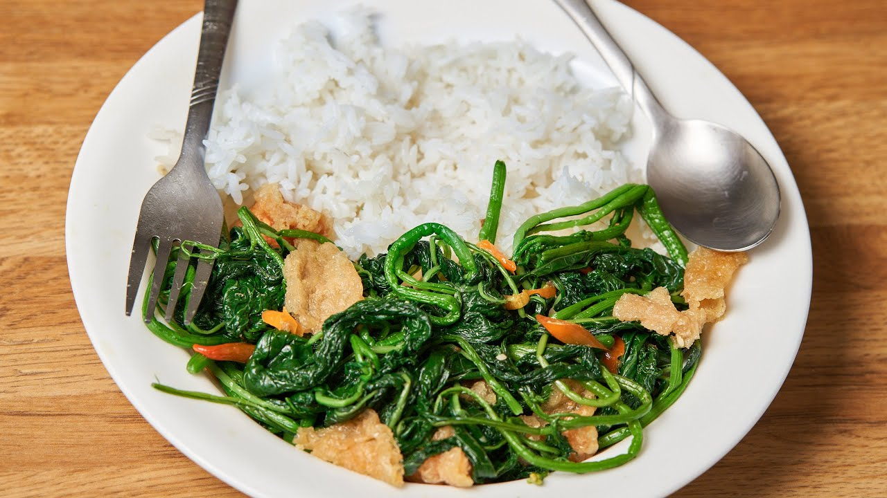

Sauteed Black Nightshade

An indigenous african vegetable commonly known us
managu
in Kenya
Ingredients
Leaves of Sauteed Black Nightshade
2 Onions
2 Tomatoes
250 ml Milk
Pinch Salt
Cooking oil
Can be served with Ugali, Rice, Roast meat or even mixed with pumpkin